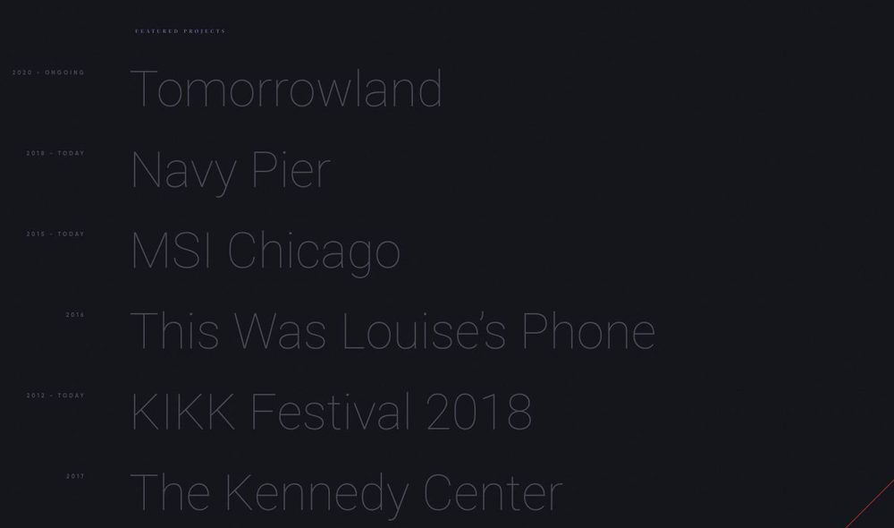
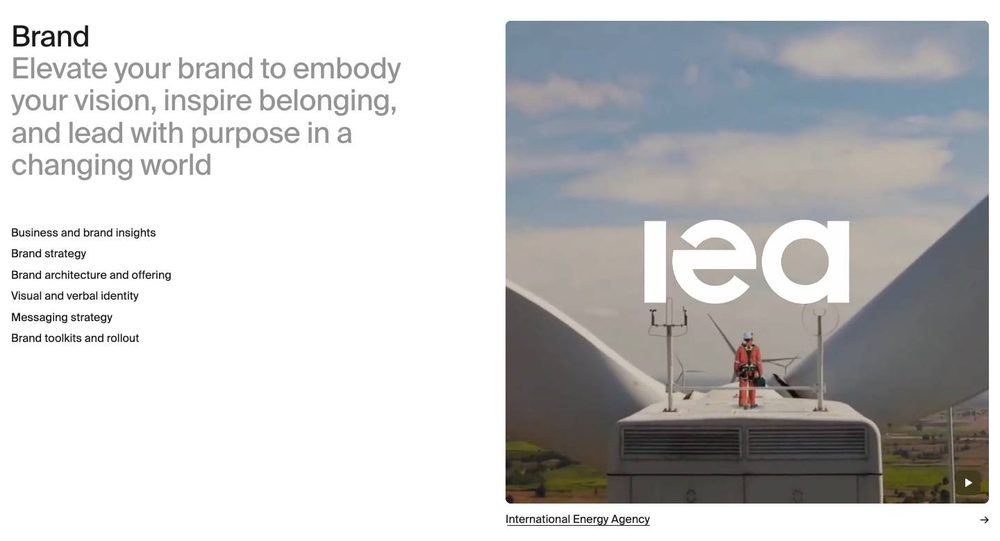
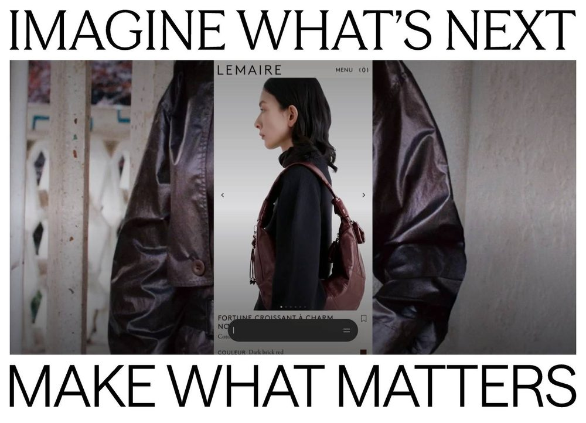
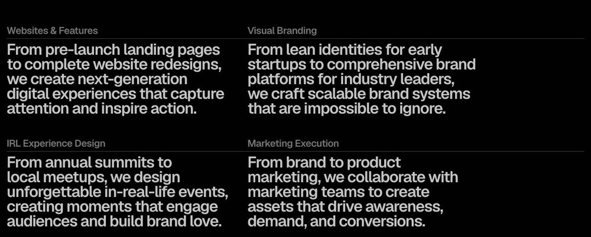
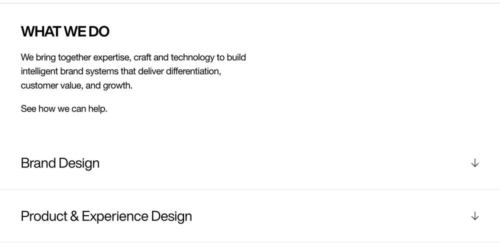

FIG.01 — lamps light up, front to back→

// 02 — SERVICE
事業内容
事業理解に
動画広告の制作ツール
売れる
検証から
LP・サイト制作の代行
自社開発AIツール
貴社の


事業内容
事業理解に
動画広告の制作ツール
売れる
検証から
LP・サイト制作の代行
自社開発AIツール
貴社の


~/samurai-style $ ls ./services [04]。// 02 — SERVICE
~/samurai-style $ ls ./services [04]
事業理解に
動画広告の制作ツール
売れる
検証から
LP・サイト制作の代行
自社開発AIツール
貴社の
画面録画を主役にせず、比喩の実写を「止まった映像」にして、録画は写真の中の端末の画面にはめ込む。写真は4枚とも「画面が真っ暗で正面を向いた端末（またはスクリーン）」を入れて撮ってもらい、あとでコードで録画を重ねる（STORY のテレビの壁と同じ作り）。
| サービス | 何を比喩にした実写か | どこを動かすか | 画面録画の添え方 |
|---|---|---|---|
| Strategy2Action | 測量。夜明け前の高原で、三脚の端末から頂上まで杭が一直線に並ぶ（地図を描き、そこまで歩く） | 杭の先の小さな灯りが、手前から奥へ1本ずつ点く（戦略→実行の順） | 三脚に載せた端末の画面にはめ込む（strategy2action_sp を暗い色味に） |
| HookHack | 釣り（hook）。夜の湖、桟橋の先で横向きのスマホを持つ手と、水面の浮き | 浮きが一瞬沈み、波紋が1つ広がる（FV の波紋＝シグナルと同じ動き） | 手元の横向きスマホの画面にはめ込む（hookhack_sp） |
| HookHacker | 3者の手で1つの模型を組む。AI（クロームの手）×インドネシアのチーム×日本人ディレクター | 白い建築模型の窓に、1つずつ灯りがともる（サイトができあがっていく） | 作業台の端のノートPCの画面にはめ込む（hookhacker_sp） |
| 動画制作 | 映写。誰もいない小さな試写室で、映写機の光の束がスクリーンへ届く | スクリーンにだけ実際の制作動画が映る＋光の束の中の埃がゆっくり漂う | スクリーンそのものにはめ込む（video-production をそのまま） |
夜明け前の青い時間、霧の残る広い高原を低い位置から撮った写真。手前の右寄りに古い木製の三脚があり、その上に横向きのタブレットが1台、画面はほぼ正面を向いて真っ暗。三脚の横に、厚手のコートの人物が小さく後ろ姿で立っている。手前から奥の尾根の頂上まで、細い金属の杭が等間隔に一直線に並び、杭の先には小さなランプ（どれも消えている）。空は深い紺から地平線だけ淡い水色。欧米のアート写真、寒色、35mmフィルムの粒子、静かで余白の多い構図、文字やロゴは入れない、横長 3:2。
風のない夜の湖を、木の桟橋の先から撮った写真。画面の左下に、桟橋に座る人の手元（袖口と手だけ）があり、横向きにしたスマートフォンを持っている。スマホの画面はカメラに対してほぼ正面で真っ暗。画面の中央やや右、鏡のような水面に赤と白の浮きが1つだけ浮かび、そこから細い釣り糸が手前へ伸びる。水面には星が映り、遠くの対岸に小さな灯りが2つ。欧米のアート写真、寒色、35mmフィルムの粒子、静かな構図、文字やロゴは入れない、横長 3:2。
暗い製図室の大きな作業台を真上から撮った写真。台の中央に、白い紙でできた縦長の建築模型（段々に積まれた建物、窓が規則正しく並ぶ、灯りは消えている）。その模型を3本の手が同時に組んでいる：褐色の肌の手、白いシャツの袖口の手、そして鏡面仕上げのクロームの手（STORY の手の彫刻と同じ質感）。台の右下に開いたノートPCが1台、画面は真っ暗でほぼ正面。卓上ランプ1灯だけの寒色寄りの光。欧米のアート写真、35mmフィルムの粒子、文字やロゴは入れない、横長 3:2。
誰もいない小さな試写室を、最後列の少し上から撮った写真。濃紺のビロードの座席の背が手前に3列並ぶ。後ろの映写窓から光の束がまっすぐ伸び、空気中の埃が光の中に浮かぶ。正面の白いスクリーンは長方形でほぼ正面、まだ何も映っておらず暗い。部屋は深い紺と黒、光の束だけ淡い水色。欧米のアート写真、寒色、35mmフィルムの粒子、文字やロゴは入れない、横長 3:2。